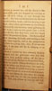
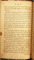
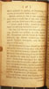
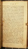
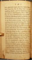
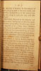
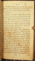
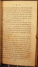
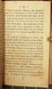
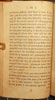

contents | previous | next THE copse into which Rosalie had thrown herself, like an affrighted bird, was very extensive, stretching along the edge of the hill, and making a curve as if to let in the few houses that composed the village; it spread beyond into a very extensive wood, and there assumed the name of the Hunacres, probably a corruption of hundred acres. It was as wild and almost as unfrequented as when the ancient Anderidæ sought their food amidst the same entangled woods, then overshadowing the whole country under the hills. Now, however, there were some winding paths through it made to solitary farms around, and a nobleman, to whom the greater part of it belonged, had cut ridings from the Downs towards his own house in two or three directions, to facilitate the way of the sportsman. The path along which Rosalie went was so intricate, that she forgot how far or
 View image of 43whither it carried her, till she found it became dusk, and was stopped by arriving at one of these ridings or cuts through the wood. She then recollected how far she had wandered from home, and was turning to go back, when three gentlemen on horseback, followed by two servants, came galloping so fast from a turn in this green lane a little beyond her, that they were near her almost before she perceived them. The foremost of them checking his horse, and looking at her with some surprise, said to his companions, "Here is a young lady, who, if we are not right, I am sure will be so obliging as to direct us." Rather wondering than alarmed, Rosalie stopped, and the gentlemen who had first spoken, said, politely taking off his hat—"We are going, Madam, to Holmwood Park, which we plainly distinguished from the hill, and to which my friend here, who ought to know, thought he could lead us by a nearer way than that which we were directed to take; but he now thinks he has taken the wrong turning, and that we are too much to the left. Can you inform us how we can best
 View image of 44make our way out of the wood? for if we could see the house again, we could easily reach it." Rosalie was about to answer, that the way they were in led directly to a common, which adjoined the Park at Holmwood, when the young man, of whom the inquirer had spoken, as one who ought to know the way to it, jumped from his horse, and exclaimed, "I cannot have forgotten you, whatever else I have forgotten during two-years absence. It is Rosalie, my dear playfellow and companion." "It is indeed, (answered she); but, Heavens! Mr. Charles Vyvian, how tall you are grown? Upon my word, I should hardly have recollected you. How is my dear Mrs. Vyvian?—How are your sisters?" The other two gentlemen, seeing the dialogue was not likely immediately to end, dismounted, and were introduced to Rosalie; the one as the nephew of Mrs. Vyvian, Mr. Montalbert, who, after a long residence abroad, was come to England for a few months only, on a visit to the Vyvian family: the other as the Count de Toriani, an Italian
) View image of 45 View image of 45nobleman, to whom also the Vyvians were the more distantly related. So many and so rapid were the questions that Mr. Charles Vyvian now had to make, that he wholly engrossed the conversation, and as they slowly walked down the green avenue before them, he seemed totally to have forgotten whither he was going, or that he had any other business in the world than to converse with Rosalie as long as he could. It was now, however, so nearly dark, that she thought it would be wrong to proceed any farther.—"I must wish you a good night, (said she) and make the best of my way through the wood home." "Indeed, but you must not think of returning by yourself," answered Vyvian.—"Harry, (added he, speaking to Montalbert) let us go home with Miss Lessington.—Shall we not, Harry?" Harry answered, "With great pleasure," and the opposition of Rosalie was in vain. "But we need not go down this way, surely, (said Vyvian); we may go along the path I saw you in, and so through your fa-
 View image of 46ther's orchard or garden, or something—I am sure I remember such a way." Rosalie answered, that it was certainly a much shorter road, but it was only a footpath, and that there was a stile to pass. "Never mind a stile, (cried the young man) we will leap our horses over." He then led the way into the path, which only allowed two persons to walk abreast—Mr. Montalbert and the Count de Torriani followed; the former murmuring loudly against Vyvian's monopoly, and the narrowness of the path. Rosalie expected to have found her father and mother returned from their walk, and in no very pleasant humour, because she had left them; but, on entering the house through the garden, the noise she heard in her father's book-room convinced her that the party whom she so earnestly wished to avoid were not gone, but were, on the contrary, set in to drinking; an alteration of plan which did not at all surprise her, when Mr. Blagham and Mr. Hughson were of the party. Young Vyvian, whose sole meaning was to see her safe, was however now compelled in
 View image of 47common civility to inquire for her mother and her sisters. Mrs. Lessington, amazed at his sudden appearance, received him with a mixture of civility and confusion, for which Rosalie knew not how to account: mingled with this extraordinary expression, there was also some anger towards her, and something that seemed like a disposition to reproach her for having introduced visitors so unexpected. Mrs. Lessington expressing her surprise at seeing him, when she imagined he was at Cheltenham, or in the North with the rest of the family, he said, "The Count de Torriani and my consin Harry, having an inclination to see Holmwood, we agreed to make a tour round the Coast, to pass about ten days at Brighthelmstone, and to make Holmwood in our way back. The Abbé Hayward had notice of our intentions yesterday, and expects us this evening. We lost our way some how by a blunder of mine, and got down into Hunacre wood, where we had the singular good fortune to meet Miss Rosalie." To Mrs. Lessington's inquiry after his mother's health, he said, that his last letters spoke of her as being rather better. "But
 View image of 48 it is (said he) more than six weeks since I have seen her, for so long have we been rambling about; and her impatience to have me return is now so great, that I shall only stay one day at Holmwood.—Yet (added he, evidently addressing himself to Rosalie) I am at this moment more disposed than ever I was in my life to make a longer abode at our old enchanted, but not enchanting castle." Rosalie did not seem to think any answer necessary to this, and Mrs. Lessington put on a look of great gravity and reserve, but said nothing; and as at that moment Mr. Montalbert did not seem to find any thing to say, a profound silence ensued for a minute, which was interrupted by the noisy entrance of Mr. Lessington and his friends. The former being apprised of the arrival of young Vyvian, came to pay him his compliments; and the others were about to depart, or at least to attempt it, though the whole party, without excepting even the master of the house, seemed to have taken such large potations, that they appeared to be but little in possession of their senses. Mr. Lessington, however, bustled up to young Vyvian, expressing the greatest delight
) View image of 49 View image of 49in meeting him, and, amidst the confusion, Mr. Montalbert approached Rosalie, to whom he had yet hardly had an opportunity of speaking, though his eyes had declared how much he wished it. "Do you not recollect me, Miss Lessington? (said he, speaking low)—I perfectly remember you, and the days I once passed with you at Holmwood made an impression on me that never will be effaced. It has ever appeared to me since the very happiest period of the happy hours of my childhood; for I was then but a boy. It is more, (added he), than eight years ago, and you were then very young." "You do me too much honour, (answered Rosalie); I was, indeed, very young—but (an involuntary sigh forced its way as she spoke) those were my days of unalloyed felicity; it was my golden age, and every scene has imprinted itself deeply on my memory...Yes! I well remember your coming to Holmwood—with your father, was it not?" "Yes; and an Italian tutor I recollect, but I dare say you do not: that then I could speak very little English."
) View image of 50 View image of 50"Why, you can't speak much now, Sir, (interrupted a voice from behind Rosalie's chair). I suppose by your accent, Sir, that you are a foreigner?" "You suppose, Sir, (said Mr. Montalbert angrily); and pray, Sir, who are you?" "Me, Sir! (answered the Rev. Mr. Hughson)——Me, Sir!——Why, Sir, my name is Hughson." "Well, Sir, (said Montalbert haughtily), whatever name you bear, I suppose it is not necessary for you to make a third in my conversation with this lady." The stout, the brave, the magnanimous Hughson, he who had kept at bay an enraged populace, and protected, with his single arm, a whole corps of officers of dragoons, was, for some reason or other, appalled by the decided and contemptuous tone taken up by Mr. Montalbert. The effects of liquor vary on different constitutions. Some cowards it renders brave, and may, perhaps, render some brave men cowards. However that might be, Hughson attempted no reply; but still, unwilling that this stranger should engross
 View image of 51the attention of Rosalie, he determined at least to keep as close to her as he could, and therefore squatted down in the window seat near her, being in truth not very well able to stand. Montalbert, shocked at his vulgarity and impertinence, and having no idea that much ceremony was necessary towards a man, whom he supposed to be a little, dirty, drunken curate, spoke in a still lower tone to Rosalie, and what was yet more mortifying, he spoke in Italian, while, with open mouth and watery eyes, her unfortunate admirer sat gasping and staring behind her totally disregarded. Montalbert, as well as Rosalie, had forgotten not only that he was in the room, but that any other persons were in it but themselves. From an oblivion so pleasing, however, they were soon roused by Vyvian who, disengaging himself with great difficulty from the maudling civilities of Mr. Lessington, who was very drunk and very tedious, came hastily to Montalbert and told him they must go. Vyvian then took Rosalie's hand, and sighing said, "Alas! how little I have seen you, and that only by chance; can I
) View image of 52 View image of 52not come to-morrow to take leave of you, Rosalie? for you know I am going abroad again almost immediately, and who knows when we shall meet once more. Tell me, Rosalie, do you think I may call here again to-morrow?" Mrs. Lessington had by this time sidled up near her daughter, to whom she did not allow time to reply, but, with an air most repulsively grave and formal, she said, "I am very sorry, Mr. Vyvian, it happens so, as your time is so short; but my daughter is particularly engaged to-morrow. We are all particularly engaged. It is extremely unfortunate indeed; another time I hope we shall be more lucky." This rebuff seemed particularly mortifying to Vyvian. He bowed coldly to the mother, and then, gently pressing the hand of Rosalie, which he still held, he said in a whisper, "I must see you again; where are you going to?"—"I do not know, indeed, (answered Rosalie), for this is the first I have heard of any engagement. I am afraid it is on some party with these men." She could add no more, for a servant informed Mr. Vyvian and the other gentlemen that their
) View image of 53 View image of 53horses were brought round. Lessington again came up, persecuting them with his civilities; and Mrs. Lessington very evidently wished them gone. It became impossible for either Vyvian or Montalbert to speak to Rosalie apart, though they appeared equally to desire it, and with reluctance, that neither could conceal, they left the house. Blagham was no longer in a situation to be troublesome, and Miss Catharine, somewhat ashamed of the figure he made, had prevailed upon him to leave the room.....Hughson, however, to whom the departure of the strangers seemed to have restored his consequence, failed not to listen eagerly to the remarks Mrs. Lessington and Miss Catharine made upon them. "I should not have known Mr. Charles Vyvian, (said the latter). How very tall he is." "He is tall, indeed, (replied the mother); but you may see he is a mere boy. That young man, would you believe it, Mr. Hughson, is hardly seventeen? He is the son of Mr. Vyvian, you know, of Holmwood, with whose lady I used to be so intimate. My daughter Rose used to live there a good deal
) View image of 54 View image of 54when she was a child, and this young man looks upon her as one of the family."——Hughson, checking a hickup which had nearly broken the sentence, cried, "Indeed!—really!—nothing to be sure can be more natural." "Pray, Ma'am, (said Miss Catharine), who is that other gentleman; I don't mean the foreign Count, but the other English gentleman? He is remarkable handsome man." "I am surprised dear Miss Kitty should think so, (sputtered Hughson). To my fancy now, he does not look at all like an Englishman—not the least." "Why, certainly, (replied Mrs. Lessington), he can hardly be called an Englishman; for, in the first place, his mother was a foreign lady, and, though his father is an Englishman, he has lived chiefly abroad, and this gentleman has never been in England above half a year at a time, though they have a very fine seat in the North of England, and a great fortune in the family." "He seems to be a very proud man, (said Hughson). I believe I half affronted him, though I am sure I don't know what I said."
 View image of 55"I believe, indeed, that you did not, (said Rosalie), and you will pardon me, Mr. Hughson, if I say that you seemed to intend to affront him." Hughson, who had no clear idea of what he had said, would have taken her hand, but she snatched it away and hastened out of the room. Soon after she had the satisfaction of hearing the whole party leave the house, and scamper away with a degree of rashness which she thought must make her sister uneasy for the safety of her lover. Rosalie, whose spirits were fatigued by the events of the afternoon, could not, however, compose herself to sleep. The sight of Charles Vyvian had recalled all those scenes which she had vainly been trying to forget, and to think of with less concern: and his manners, but still more those of his relation, Mr. Montalbert, formed so decided a contrast to those of the persons with whom it was now her lot to be associated, that she found she should, by continually making the comparison, be rendered more uneasy than ever. She saw too, by her mother's manner, that she would yet have to undergo some se-
) View image of 56 View image of 56vere reproofs for having brought Charles Vyvian and his two companions home with her; and though it was easy to account for their appearance, which it must be known was merely in consequence of accidentally meeting her, yet she knew that the circumstance of her so abruptly quitting company, in which it was her father's wish that she should remain, would bring upon her reproaches that she should not soon or easily appease. The next day verified her apprehensions. Her father ordered her to attend him in his study at an early hour of the morning, as he was going out. She entered dejectedly. Her mother was there, and both looked coolly upon her, as they bade her shut the door and sit down. Mr. Lessington thus began: "Rose, it is fit and right that you should know that you have extremely displeased me." "I am extremely sorry for it, Sir. It was by no means my intention." "You think then, perhaps, that it is not improper to slight my friends, and show that you despise them—gentlemen whose notice
 View image of 57does you so much honour, and whose good opinion perhaps may be so material to you. Do you consider, girl, that you have no fortune? That a clergyman's income dies with him? That it is your business to endeavour to procure an establishment, instead of affecting these fine romantic airs?" "I affected no airs, Sir—I obeyed your commands, and made tea for the gentlemen—I did not know you wished me to remain with them afterwards, especially as you must have perceived that they were not in a situation in which they could be pleasant company for women." "Prudish airs!—Were not your mother and you sisters with you? and do you think I would have asked either them or you to stay in improper company?—Let me hear no more of all this, but listen to what I have to say to you:—Mr. Hughson is a young man of fortune; he is, in his family, his situation, and prospects, every way unexceptionable: he seemed to take particular notice of you, notwithstanding your rudeness to him. I expect, if this partiality on his part should go any farther, that you will dispose yourself
) View image of 58 View image of 58to receive him as a man to whom it would be agreeable to me, and highly honourable and advantageous to you, to be allied." Rosalie was about to answer, but her father, rising and leaving the room, said, with yet more sternness, "I will have no answer, unless it be an answer of compliance." Then, turning to Mrs. Lessington, he added, "you will not fail to enforce what I have said, and to impress on the mind of this young woman, that, though she has hitherto found me an indulgent father, I know how to make myself be obeyed."——He then left the room, and Mrs. Lessington said, "You see, Rose, that your father is peremptory. If Mr. Hughson....... "Dear Madam, (said Rosalie), what occasion can there be for all these menaces of anger, if I do not listen to Mr. Hughson, when it is not even known whether Mr. Hughson will ever think of me again?" "Perhaps your father has reasons, with which he may not think proper to acquaint you, why he knows Mr. Hughson means to address you."
 View image of 59"Very certainly, Madam, Mr. Hughson could not communicate to my father what he could not know himself last night; for so far from being capable of thinking what he intended for the future, he knew not what he was about then: but, admitting it to be so, why must I be compelled to listen to him? Indeed, my dear Mama, this Mr. Hughson is a man it is utterly impossible for me to like." "It would be something new, Rose, and altogether unlike the heroines whose adventures you have studied, if you should happen to like the man recommended to you by your friends, and in every respect eligible. Do not think of doing a thing so entirely out of rule, but contrive to take a liking not only to some other man, but, if possible, to the very man to whom of all others it is him possible you can ever be united." Rosalie blushed deeply, without exactly knowing why. "Dear Madam, (said she), what a strange thing that is to say?" "As strange as true, (replied Mrs. Lessington). Its truth, I am much afraid, will be
 View image of 60too soon verified; but have a care, I promise you not only that nobody will defend you in this dangerous absurdity, but that it will be the certain means of estranging from you those friends who love you best.......I won't be interrupted, (added she, seeing her daughter was going to speak), I won't be interrupted—hear me, and tell me afterwards, whether you who have nothing, you who must go into some humble business, or even, perhaps, to service, if your father should die, have any sort of pretensions to pleasing yourself, even if the people you fancy you prefer were indeed so foolishly inconsistent as to think for a moment of committing such a folly as taking you out of the rank you are in, which, you may be assured, child, never entered their heads, whatever your vanity and your ignorance of the world may have put into yours." "For God's sake, my dear mother! (said Rosalie, with tears in her eyes), what do you mean? This is the first time you ever talked to me in this manner! How I have deserved it now I am entirely ignorant. Did
) View image of 61 View image of 61I ever say I like any particular person?—or——" "Pho! pho! (cried Mrs. Lessington, interrupting her), you cannot deceive me; but let me earnestly exhort you, Rosalie, never to think of the persons to whom you know I allude, but to determine to follow, like a reasonable woman, the advice of those who know better what is fit for you than you do yourself." Rosalie remained silent. Her soul abhorred the idea of receiving Hughson as a lover, nor could she endure that her mother should for a moment believe her capable of hesitating about him. The conversation she had held, however, was so new, and so strange, that she had not courage to defend herself; and, after a short pause, Mrs. Lessington thus went on:— "Did you ever know any woman who married just according to their own romantic whims in setting out in life?——Did I do it, do you think?——Did Mrs. Vyvian?"
) View image of 62 View image of 62"Of you, Madam, (said Rosalie), I cannot pretend to speak. Mrs. Vyvian certainly did not marry Mr. Vyvian from choice; but has she been happy?—has not her whole life been embittered by the sacrifice she made, as I have heard, to her father's commands?" "That was very different, (said Mrs. Lessington). My friend was————" She stopped, as she had often done before when their conversation had been led to the same topic, and then immediately changing it, said, "But you now know my opinion, and your father's commands. We are going to-day where you will again be in company with Mr. Hughson, and it is expected of you, that you will behave to him as to a friend of your father's, and a gentleman whose partiality does you honour." "Whither am I to go, Madam?" said Rosalie in a dejected tone. "To Chichester, (replied her mother dryly).....We dine with Mr. Blagham;
) View image of 63 View image of 63his uncle is to be there with some other friends; your sister Catharine's settlement is to be signed; afterwards a party of friends dine with him on venison, and we shall remain there all night, perhaps go to the assembly the night after: you will, therefore, put up a small packet of clothes, and act accordingly." From the manner in which this was said, Rosalie knew that no remonstrance against an expedition so very irksome to her would be listened to; and that, however hateful to her, she must obey. She retired, therefore, with an heavy heart to her own room, and began to dress and to prepare for the party. But her mother's oblique reproaches had made a great impression on her mind: she imagined they must allude to Mr. Charles Vyvian, or Mr. Montalbert; but probably the former, as her mother could hardly suspect her of a partiality for a man she had not seen since she was ten or eleven years old. In regard to Mr. Vyvian her heart acquitted her; but she was
) View image of 64 View image of 64 at the same time conscious that nothing could do so great a disservice to Hughson, in her opinion, as putting him a moment in comparison with such a man as Montalbert.
|
){kind=link}
){kind=link}
){kind=link}
){kind=link}
){kind=link}
){kind=link}
){kind=link}
){kind=link}
){kind=link}
){kind=link}